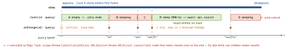

swiftui · folio
In one line: SwiftUI owns the lifetime of async work: .task starts with the view and is
cancelled when the view goes away or its id changes. Views are @MainActor:
writing state after await is safe, blocking the main actor is your bug. Truth lives in
@State / @Observable; effects hang off .task(id:), onChange, .refreshable.
Download PDF Print view LaTeX source


How it works
.task { }(15): starts before the view appears, priority.userInitiated; cancelled if the view disappears first..task(id:): a newEquatableid value cancels the old task and starts a fresh one. Current docs: created withTask.immediate— synchronous up to the firstawait.- Cancellation is cooperative: only a flag;
Task.sleep,URLSession,try Task.checkCancellation()turn it into an error. - Isolation:
Viewis@MainActor @preconcurrency(Xcode 16 SDK; before, onlybody).init,body, actions, the.taskclosure run on main;awaitsuspends without blocking. Swift 6.2 approachable concurrency: anonisolated asyncfunc runs on the caller’s actor; CPU work:@concurrent. - Models:
@State private var model = Model()owns an@Observable; pass it down as a plainlet; a child needing$model.namedeclares@Bindable var model(or@Bindable var m = modelinbody). Load in.task, notinit. onChange(of:initial:_:)(17):{ old, new in }or{ };initial: truealso fires on appear; main actor, keep it short.(of:perform:)deprecated..refreshable(15): pull-to-refresh; spinner stays until the closure returns; env\.refreshfor custom views.- Search:
.searchable(text: $q)(15) +.task(id: q)with a sleep = debounce and cancel-previous;searchScopes,searchSuggestions(16). AsyncImage(15): sharedURLSession; phasesempty / success / failure; no downsampling. iOS 27 adds HTTP caching,init(request:),.asyncImageURLSession(_:).- Focus (15):
@FocusState var f: Field?,.focused($f, equals: .email),.onSubmit { f = .password }. Optional-driven UI:.sheet(item:),.alert(_:isPresented:presenting:), nowalert(_:item:);nil= dismissed.
Example — debounced search
enum Phase<T> { case idle, loading, loaded(T), failed(String) }
struct SearchView: View {
@State private var query = ""
@State private var phase: Phase<[Hit]> = .idle
let api: SearchAPI
var body: some View {
ResultsList(phase: phase)
.searchable(text: $query)
.task(id: query) { // restart per keystroke
guard !query.isEmpty else { phase = .idle; return }
do {
try await Task.sleep(for: .milliseconds(300)) // debounce
phase = .loading
phase = .loaded(try await api.search(query)) // on main
} catch { // incl. URLError
if !Task.isCancelled { phase = .failed("\(error)") } }
}
.refreshable { await reload() } // spinner until done
} }Which tool for which job
| load once per appearance | .task { } |
| reload when an input changes | .task(id: input) |
| consume a stream for the view’s life | .task { for await v in seq { } } |
| cheap sync effect on a change | onChange(of:initial:) |
| user pull / refresh action | .refreshable { await } |
| button kicks off work | Task { } in the action — lives on; keep the handle to cancel |
| observe a model outside views | Observations / withObservationTracking |
Traps
.onAppear { Task { await load() } }— unstructured: not cancelled on disappear, outlives the screen.try? await Task.sleep(…)swallows cancellation — the stale “debounced” search still fires. Let it throw, or checkTask.isCancelled.- Showing
URLError.cancelledas an error — every keystroke flashes a failure. - JSON decode / image resize inside
.taskruns on the main actor — hitches. .refreshable { Task { …} }returns at once — spinner vanishes..id(UUID())/ unstable identity re-creates the view:.taskre-runs, duplicate fetches.- The opposite: a split-view detail keeps its identity while
selectionchanges — a plain.tasknever re-runs and shows the old item. Key it:.task(id: item.id). onChangethat writes the value it watches (directly or via layout) — a feedback loop; runtime log: “tried to update multiple times per frame”(unverified).